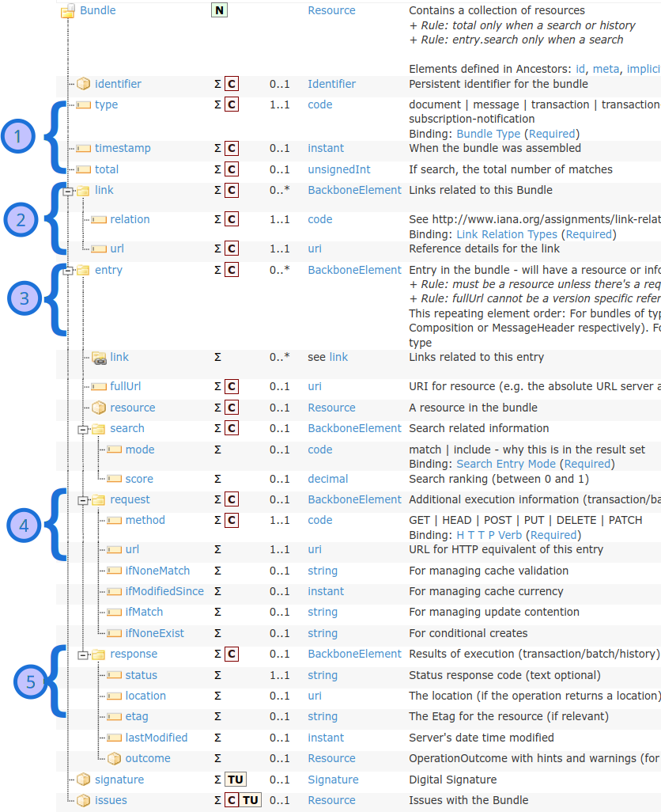

Bundle tutorial
Bundle is a constainer for resources, enabling you to group and transmit resources altogether at once. Guidance on the resource in general is available on the Bundle and on the RESTful API pages, with specific bundle types like messaging and documents having their own.
Contents
Step 1: About Bundle Step 2: Paging Step 3: Bundle types Step 4: Upload endpoints Step 5: Reference resolutionStep 1: About Bundle
We've mentioned in the previous tutorial on resource references that resources can "contain" other resources. So how are Bundles different? The FHIR spec is quite helpful in this regard:
- Contained resources are "in" the container resource - they can only ever be interpreted and/or changed in the context of the container
- A bundle is a collection of resources that have an independent existence - for example, they can also be accessed directly using the RESTful API
So, contained resources cannot be GET'd, PUT'd and DELETE'd separately, or even referenced individually from outside the containing resource. Resources inside a bundle, depending on your Bundle type and how you've uploaded it, do get created individually on the server and thus can be acted on independently.
Here is how the general layout of a Bundle looks like:
{kind=link}
- Metadata describing the bundle type, total amount of entries (some which may not be visible because of paging), and a link if you need to retrieve this bundle later.
- The meat of the resource, so to speak - this is where the resources that the bundle has are stored. Included with resources are URLs which you can use to retrieve the resource invididually.
- Used when you're uploading bundles - this is where you specify to the server what to do with each resource.
- Used by the server when it's responding to your upload request - this is where it says how each operation went.
Paging
When the bundle is too big to send in one go, the server can choose to break it up into pieces (called "pages"). Since you can generally only get one response per HTTP request, transmitting the pieces becomes a problem. To solve this, the bundle provides links to the next page within it - so the client, after getting a page, can request the page and so on until the end. In addition to a link to the next page, links to the previous, first, and last pages are also provided (example from FHIR):
See more information on paging on the FHIR spec.
Step 3: Bundle Types
There are several types of bundles defined by FHIR: document, message, transaction, transaction-response, batch, batch-response, history, searchset, and collection.
| Bundle type | Bundle description |
|---|---|
| searchset | Used in searching - an operation you're already familiar with - it's the bundle that collates search results into a single response. As some search results can return a large number of results, this is where the idea of paging comes in. |
| document, message, collection | Used in specific data exchange paradigms. Loosely speaking, you can think of document-type bundles as those representing a CDA document, a message-type bundle representing a V2 message, and a collection as a general catch-all type. |
| history | Similar to searchset, but is specialised for the _history operation when you're looking at the history of operations on and versions of a resource(s). |
| batch, transaction | Allows you to condense multiple operations into one - say you'd like to upload 5 resources but don't want to do it 5 times, you can gather all of the resources up into a Bundle and upload it all at once. The difference between a batch and a transaction is how things are handled when an issue happens. When one of the operations of a transaction fails, the entire transaction fails and no changes happen on the server as a result of the transaction. If one of the operations of a batch fails, then the rest of the operations can still complete successfully. |
| batch-response, transaction-response | What the server will respond with where it tells you what happened with each operation within your batch or transaction bundle. |
Step 4: Upload endpoints
If you upload a Bundle to [Service Root URL]/Bundle, your Bundle will be stored as-is, just like any other resource. Sometimes this is the desired behaviour, but in other times you'd like the server to actually process the bundle - for example, the transactions in your transaction bundle to actually be acted upon. In order to get the server to unpack and process your bundle, you need to upload to the [Service Root URL] directly - this most reliably works for transaction, batch, and document bundle types. How the server deals with other bundle types is up to it. Here is a complete list of endpoints that bundles may be uploaded to:
| Endpoint | Bundle type | Effect on the bundle |
|---|---|---|
[Service Root URL] |
batch, transaction | Bundle is processed by the server - individual operations/resources are unpacked and acted upon. |
[Service Root URL] |
history | Bundle may be be processed by the server as its structure is very similar to batch/history type. |
[Service Root URL] |
document, message, transaction-response, batch-response, history, searchset, collection | Bundle may be processed by the server as create/update operations. |
[Service Root URL]/Binary |
document | Bundle is stored as-is by the server as binary content and not acted upon. |
[Service Root URL]/Bundle |
document, transaction, transaction-response, batch, batch-response, history, searchset, and collection | Bundle is stored as-is by the server and not acted upon, same as if you uploaded a Patient resource. |
[Service Root URL]/Bundle |
message | Bundle is processed by the server - server will store the bundle as-is, index it on the MessageHeader, and act on the message. This is the RESTful endpoint for a message bundle |
[Service Root URL]/$process-message |
message | Bundle is processed by the server as if it is a message. |
Step 5: Reference resolution
Resources in a bundle can reference two types of resources - either those already existing on the server, outside the bundle, or resources inside the bundle that are yet to be created on the server. Referencing resources inside a bundle can be tricky - if you're uploading the resources inside a bundle, how can you reference them if they don't have IDs yet?
An important point while working with bundles, unlike other resources, is that the context of use matters much more than usual - mainly, whenever it is the client uploading a bundle or downloading a bundle from the server. With this in mind, resolving references within a Bundle works differently depending on whenever you're an application uploading a Bundle or downloading a Bundle.
If you're downloading any kind of bundle, then the same reference rules described in the previous "patient with references" tutorial apply (see the FHIR section on this). The gist of it is that you should look for referenced resources within the bundle first, and if the reference is not an absolute one, to convert it following a series of rules.
If you're uploading any kind of bundle, consult the table below:
| Bundle type | Effect on bundle upload |
|---|---|
| document | You can create your own IDs for resources and use them as references for other resources within the bundle. A document bundle typically is stored as-is on the server, without it getting unpacked - although if you upload it to the [Service Root URL] instead of the usual endpoints then it will be up to the server to unpack the bundle and replace your assigned resource ID's with its own (though it doesn't have to). |
| batch | You cannot reference other resources inside the bundle - thus all resources inside a batch bundle must be completely independant, only reference resources already created on the server, or resources available on other servers. |
| transaction | You can reference other resources inside the bundle using their business identifiers in a simplified search query. It is then on the server to replace the search query with the resource ID's when processing the bundle. See Conditional References section of Transaction Processing Rules for more. |
| message | Similar to document - you create your own IDs and use those as references within the bundle. In the event that you upload a message bundle to the RESTful API on the [Service Root URL]/Bundle endpoint (instead of the usual [Service Root URL]/Bundle/$process-message), the bundle is not unpacked and only the MessageHeader is indexed. |
| collection, searchset, history | You can create your own IDs for resources and use them as references within the bundle - although the server will most likely store these resources as-is and not act on them, since these types of bundles are typically for servers to send to clients. |
That's about it for the difficult parts of a Bundle! Have a look at the FHIR page for Bundle now for things like uniqueness rules and search parameters of a Bundle.